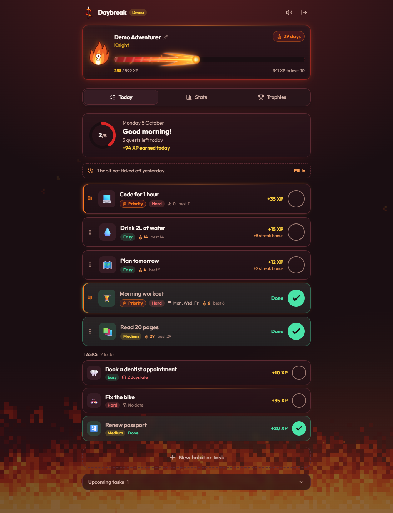

Featured · 2026
Live
Daybreak
Gamified habit tracker
An installable, offline-capable PWA for tracking habits, with XP, levels, streaks, trophies and a no-account demo mode.
- A pure game engine derives all progress from completion history, so rules change without data migrations.
- Optimistic UI with automatic rollback (TanStack Query) behind a repository interface for Supabase and an offline demo backend.
- User data secured with PostgreSQL Row Level Security.
- Vitest unit tests and Playwright end-to-end tests run in GitHub Actions on every push, with tagged releases.